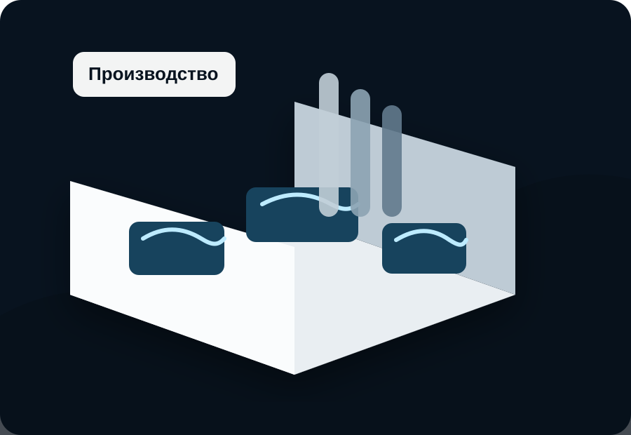
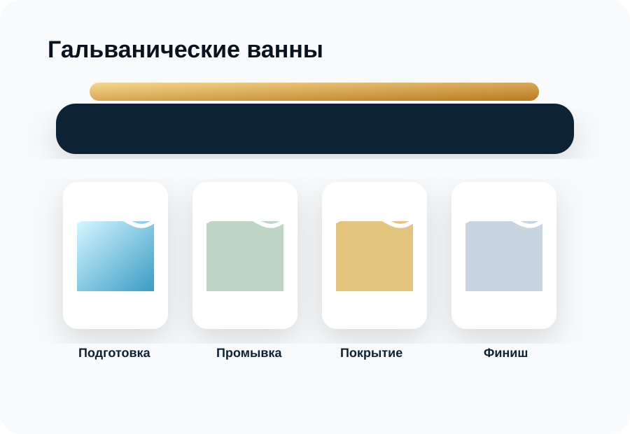
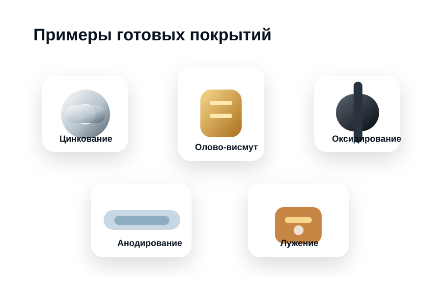
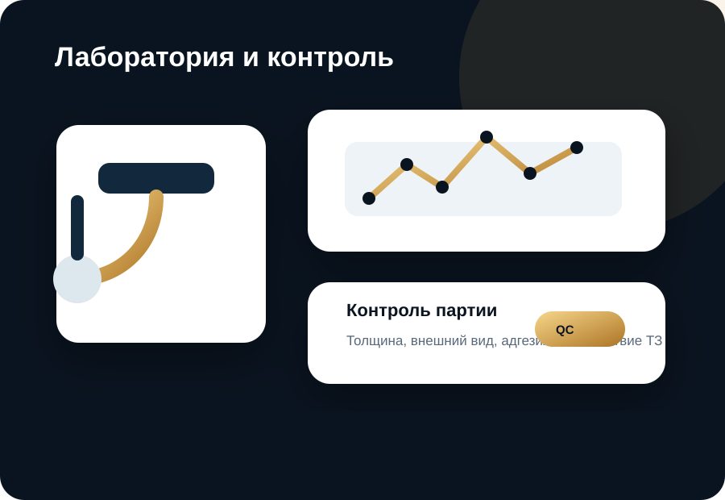
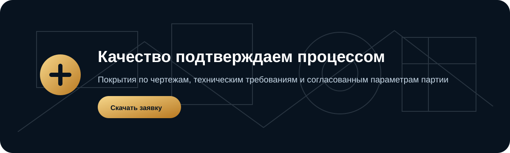

Производство без визуального шума
Сайт выглядит как технологическая компания, а не как доска объявлений: меньше случайных элементов, больше воздуха и доверия.
ООО «NEW-Контакт» · технологическое покрытие деталей
Гальванические и химические покрытия с производственной дисциплиной: химическое цинкование, фосфатирование, олово-висмут, воронение, лужение и анодирование по чертежам и техническим требованиям.
Сайт выглядит как технологическая компания, а не как доска объявлений: меньше случайных элементов, больше воздуха и доверия.
Показываем не только список услуг, а связь “материал → задача → покрытие → контроль качества”.
Лаборатория, проверка партии, требования к покрытию и понятный путь от заявки до отгрузки.
Каталог услуг
Подбираем технологию под материал, геометрию, условия эксплуатации, внешний вид, коррозионную стойкость и требования к пайке.
Защита стальных и чугунных деталей от коррозии, обработка крепежа, корпусных элементов и серийных партий.
Фосфатный слой для подготовки под окраску, повышения адгезии ЛКП и дополнительной защиты поверхности.
Покрытие для контактов, микроконтактов, деталей радиоэлектроники и изделий под пайку.
Декоративно-защитное чёрное покрытие для стальных деталей, инструмента и крепежа.
Оловянное покрытие для паяемости, защиты контактов, медных шин, клемм и электротехнических элементов.
Обработка алюминия и сплавов для защиты, износостойкости и аккуратного технического внешнего вида.
Подбор покрытия
Быстрая рекомендация помогает определить направление. Финальное решение принимается после оценки чертежа, партии и требований.
Производство
Для сайта используются самостоятельно смоделированные изображения. Их можно заменить на реальные фотографии вашего производства.

Линии, подвесы, подготовка поверхности, движение партии через производственный участок.

Подготовка, промывка, нанесение покрытия, финишная обработка.

Цинк, фосфат, Sn-Bi, воронение, лужение и анодирование.
Лаборатория
Премиальная подача усиливает доверие: клиент видит не только услугу, но и процесс контроля, документацию и технологический подход.

Как мы работаем
Чертёж, фото, материал, партия и требования.
Выбор покрытия и технологической подготовки.
Стоимость, сроки, упаковка и условия отгрузки.
Подготовка поверхности и нанесение покрытия.
Проверка качества и соответствия требованиям.
Передача готовой партии заказчику.

Заявка технологу
Опишите задачу, укажите материал и предполагаемое покрытие. Форма работает на статическом сайте через почтовый клиент.
Контакты
Замените контакты на реальные перед публикацией.
Место для iframe Яндекс.Карт или 2ГИС